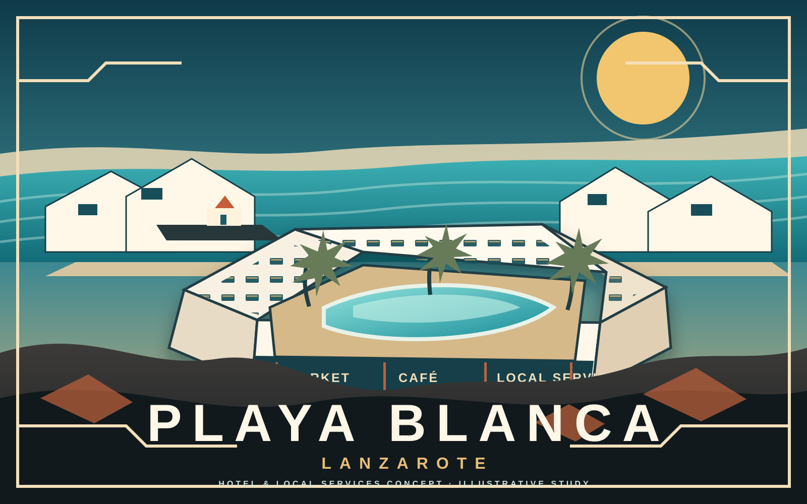

Close what can be closed
Complete the relevant records, identify the competent office and answer the questions that can be answered through documents and due process.
OPEN LETTER · LANZAROTE · TWO INDEPENDENT WORKSTREAMS
Lanzarote can resolve a difficult legacy with documentary clarity and, independently, create the conditions for responsible new investment. We propose one opening conversation followed by two separate routes: the Sun Park/MYND Yaiza legacy and a prospective Montaña Roja project.
To the Presidency and team of the Cabildo · to the Mayor’s office and services of Yaiza Council
Project Sun Rock and the entities involved in its recovery workstream have a long-term interest in hospitality, real assets and responsible initiatives that can add economic and social value to the island. We believe a mature institutional relationship can address an unresolved legacy without allowing it to define every future conversation.
Complete the relevant records, identify the competent office and answer the questions that can be answered through documents and due process.
Subject a prospective Montaña Roja investment to legal, corporate, planning, technical and financial scrutiny before any commitment is represented as final.
If a future project proceeds, define local employment, skills, enterprise, resource-efficiency and public-realm outcomes that can be measured and reported.
This letter announces a working direction, not an acquired asset, approved development, financing commitment or request for preferential treatment.
Related context · independent decisions
The historic controversy and the future investment discussion may both concern Lanzarote, but they require different evidence, teams, procedures and decisions. Neither should be used to purchase, delay or predetermine the other.
The Sun Park history is long, contested and supported by a substantial public evidential record. This letter does not ask either institution to accept our conclusions without examination. It asks for a practical route to complete the record, identify what each competent body can answer and resolve matters that documentary clarity can resolve.
Objective: resolution where possible; lawful continuation through the proper procedures where disagreement remains.
We are examining a serious prospective investment at Montaña Roja in Playa Blanca. It is currently subject to legal, corporate, planning, technical and financial due diligence. No acquisition, planning approval, financing commitment or construction decision is announced by this letter.
Ambition, subject to all conditions: a new high-quality hotel with complementary retail, commercial and public-facing space, designed to create measurable value beyond the hotel boundary.
This is the existing Project Sun Rock illustration for the broader Playa Blanca hotel-and-local-services concept. It is included here to make the future-workstream ambition visible while keeping the historic Sun Park/MYND Yaiza route separate.
Illustrative communication study · no approval, site-specific Montaña Roja design or transaction status implied
Explore the fuller Playa Blanca Future concept →
One opening conversation · two working tables
We propose a short opening meeting to confirm the architecture, followed by two separate working routes. Within the legacy route, the Cabildo and Yaiza must continue to answer only for their own files and powers.
For every material question: identify the file, institution, competent office, source document, outstanding request, evidential status and next action. The purpose is to make progress visible and prevent different legal categories from being merged.
Identify the applicable planning, tourism, environmental, infrastructure, water, sanitation, mobility and administrative requirements before substantial capital or public claims are committed.
Which unit lists, authority documents, checks, reports and reservations were used in the relevant tourism files?
Open the Cabildo route →This route does not determine civil ownership or real rights.Who was treated as owner, promoter, operator or representative, for which units, and on which municipal documents?
Open the Yaiza route →This route does not ask the Council to decide an insolvency or third-party liability.We request a short preparatory video call and, after that, the appropriate separate working meetings in Lanzarote. The opening call should confirm the two-workstream structure, identify the responsible teams and prevent any misunderstanding that one route is consideration for the other.
The first table can establish the legacy-document matrix. The second can identify the ordinary pre-application pathway for a prospective Montaña Roja project. Neither meeting should negotiate a predetermined institutional outcome.
Institutional safeguard
Clarity protects the institutions, the project parties and the public. The historic record and the prospective investment must remain legally, evidentially and procedurally independent.
One chapter deserves to be closed correctly. The next deserves to be opened responsibly.
Lanzarote social value
A future project should create value beyond the hotel boundary.
Social impact should be specified before it is celebrated. If Montaña Roja advances, the project team should publish a baseline, feasible targets and a reporting method before construction or operations claims are made.
Local pathways into lasting employment
Construction and operational opportunities, vocational training, apprenticeships and progression routes connected to Lanzarote and Canary Islands talent.
Commercial space with a wider purpose
Explore opportunities for local retail, food, services, creators and small businesses within the public-facing commercial component, subject to feasibility and fair selection.
Resource efficiency and island fit
Water and energy efficiency, landscape-sensitive design, accessibility, sensible mobility and public-realm improvements assessed through the applicable planning and environmental processes.